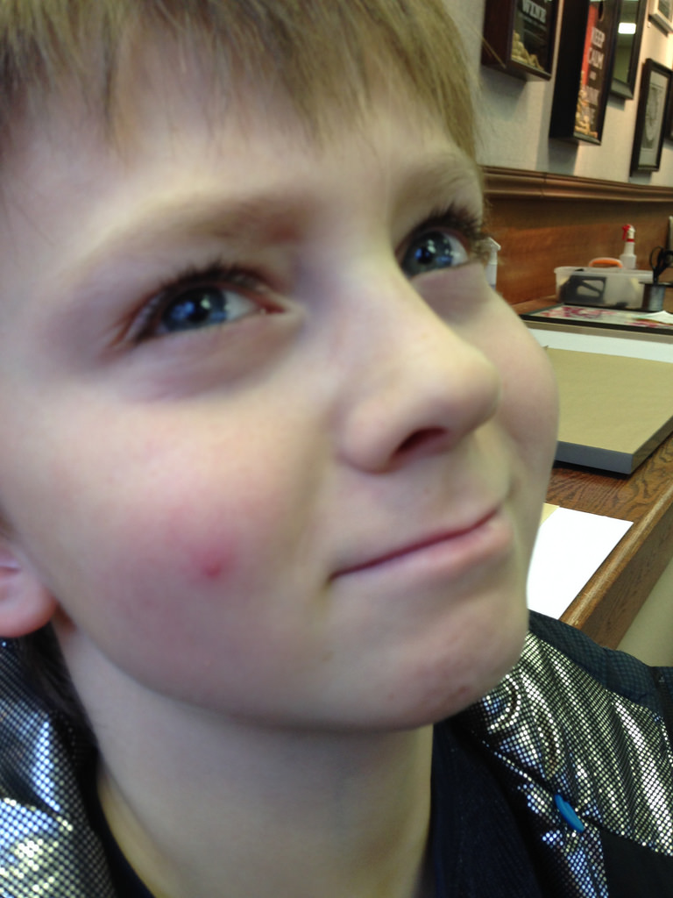
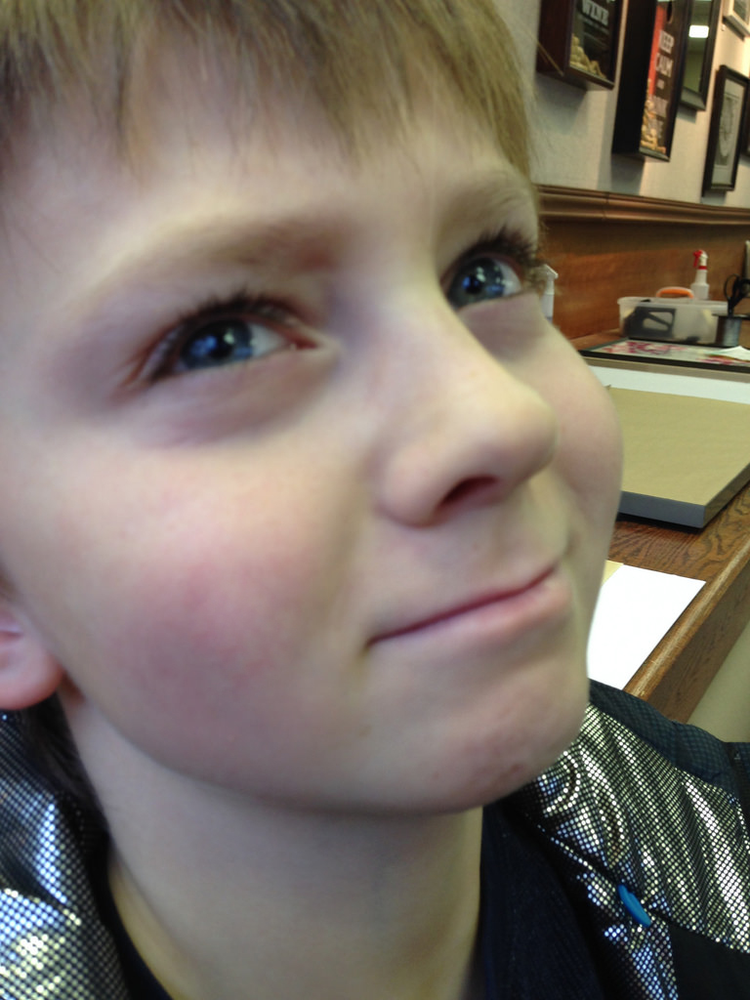

Description
I will be breifly showing you how to correct minor imperfections in
your photos, wether that be getting rid of an annoying pimple, or
fixing cracks in old photos. I will be using these examples in a
short video tutorial for you.
Before

After

Before

After